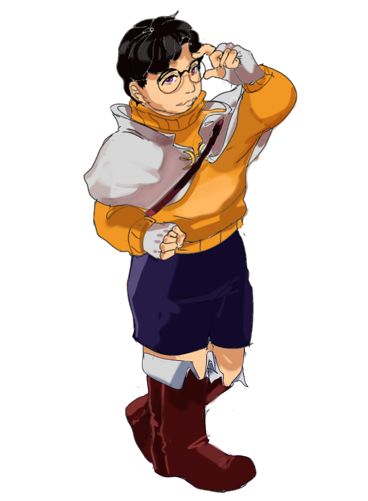
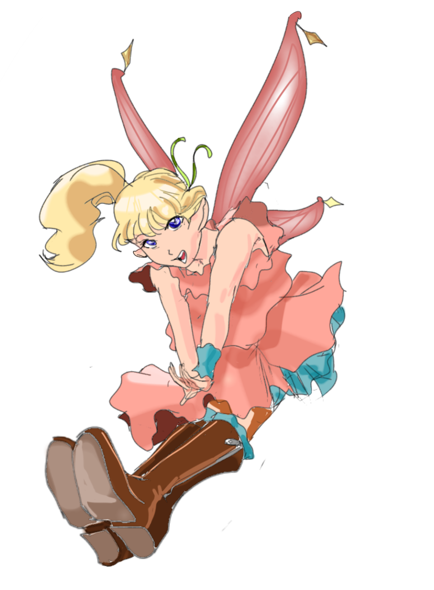
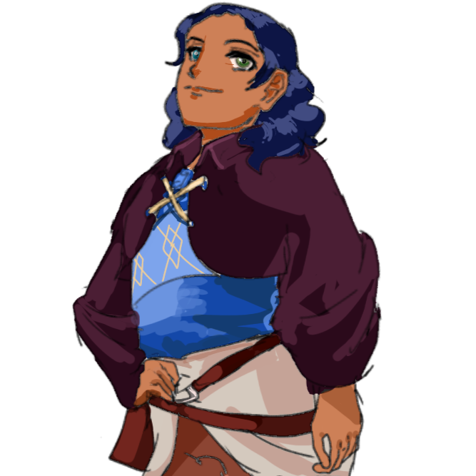
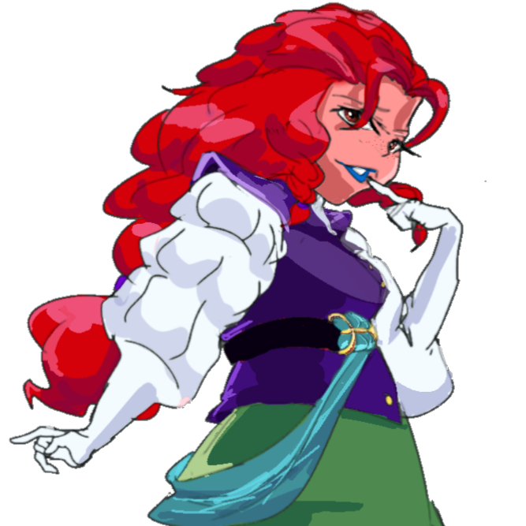
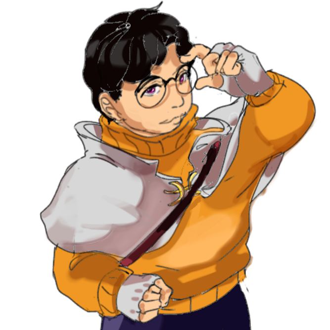
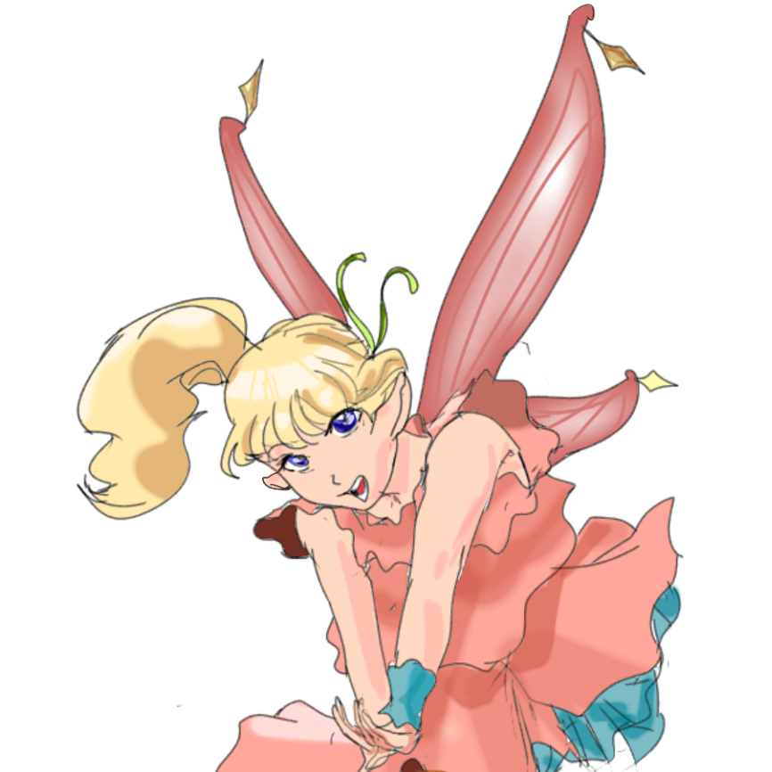

Escape the Maze AI
Wove for You
Race four stages, outread the machine, find your match.

How To Play
Step #1
Meet Miller, Jen, Aidan and Lizzy.
They are locked in a maze of papers and pictures.
Help them escape!
Step #2
Race the maze by erasing AI-prompted arts.
Tick the right answers before the time clicks.
Eyes for the keys! The lore needs your score!
Step #3
Powers up! Read ahead of AI-brained writing.
Right answers lead to the final page of the book.
Find your Character Match at the end!
What Is MilleRace?
MilleRace is a skill-based quiz
for internet users.
It's inspired by the human arts
generated in AI.
Players sort odd-one-outs
through four stages.
Meet Your Character Match
MilleRace has four unique characters at every stage.
Inspired by OECD Scale and Cambridge Reading Grade.
Players get compatible matches based on the score

MILLER
Miller loves finding clues for his adventures!
But he often gets lost without his keys.
That is why thinking critically is important!

JEN
Jen knows everything!
But she never really knows what to trust.
She always checks... factually!
AIDAN
Aidan loves browsing the internet!
But he only accepts legit sources.
He sees citations and timelines!

LIZZY
Lizzy's eyes set on details!
She reads graphs like the Egyptian pyramid.
Statistics got nothing on her!

Take Your Test Now
Race through four stages, outread the machine, and discover your character match.
Decoding the AI Horizon with MilleRace
A gamified relay race developed to address the Indonesian literacy paradox, train critical reading, and cultivate discernment in an era of generative AI.
📖 The Indonesian Literacy Paradox
Data from Badan Pusat Statistik (2024) indicates that only 14 out of 34 provinces in Indonesia have established public libraries with accessible catalog data. With average library borrowing of just 2 items per year and low triennial PISA scores, access has historically been a bottleneck.
Yet, seasonal book exhibitions such as Semesta Buku and Big Bad Wolf witness over 5 million new books purchased annually. The curiosity exists—what readers need is an accessible, engaging, and modern entry point.
🤖 The Rise of Generative AI
As AI tools synthesize realistic art and hallucinated articles in seconds, distinguishing human intentionality from algorithmic output has become a foundational 21st-century survival skill.
MilleRace translates academic media literacy frameworks into an immersive 3-minute challenge that encourages analytical thinking without punitive grades.
The Artificial Intelligence Assessment Scale (AIAS)
A standardized diagnostic framework developed to distinguish human intentionality from generative algorithmic outputs.
Symmetry
Evaluating unnatural geometric perfection and mirror symmetries versus genuine human balance and organic asymmetry.
Expressionalism
Measuring genuine emotive resonance, subtext, and vulnerability versus superficial prompt mimicry and aesthetic sheen.
Distinctions
Identifying unique human stylistic strokes, quirks, and purposeful flaws vs. latent-space blending artifacts.
Proportionality
Spotting anatomical anomalies, impossible physical geometry, tangents, and spatial logic failures in synthesized media.
Memorability
Distinguishing original authorial voice and profound conceptual storytelling from repetitive, generic template outputs.
The 4-Stage Relay Journey
Four high-intensity stages designed around UNESCO MIL & PISA frameworks. Earn all 4 keys before the timer runs out!
Visual Gallery
Analyze 4 side-by-side artworks. Eliminate generative decoys by spotting anatomical artifacts and geometric anomalies to rescue real human masterworks.
Literary Passwords
Crack ten archival security doors by filling in missing keywords from world classics and modern masterpieces to restore library access.
Textual AIAS
Calibrate a 4-point rating bar evaluating text passages on synthetic vs. human authenticity, detecting statistical clichés and fabricated content.
PISA Scale
Tackle complex PISA-calibrated reading comprehension items requiring deep multi-layered reasoning, nuance extraction, and critical evaluation.
Meet the Minds Behind MilleRace
An interdisciplinary team of students from Mulawarman University, uniting literature, design, computing, and international diplomacy.
Syahna Maryam
Senior, English LiteratureOrchestrates overall project scope, character backstories, and stage scripts. Researched the pedagogical alignment with CEFR and PISA standards to build Miller, Jen, Aidan, and Lizzy.
Chairil Aminullah
Junior, English LiteratureSpearheads brand aesthetics, Figma interactive UI/UX architecture, visual style guidelines, and the regional outreach campaign across East Kalimantan schools.
Syema Chaelint J. K.
Junior, International RelationsHand-illustrated the iconic character designs, stage backgrounds, and original sketch assets used in Stage 1 to challenge AI-generated decoys.
Fazri R. N. Gading
Postgraduate, Computer ScienceArchitected and built the entire web game application end-to-end—engineering the SPA framework, all 4 interactive puzzle stages, UI/UX design implementation, cloud & local leaderboard synchronization, timer engine, animations, and deployment pipeline.
Muhammad Farrel Sirah
Penultimate, Computer ScienceFormulated the foundational game logic mechanisms, stage scoring rules, and structured the initial coding project planning roadmap.
Muhammad Fahrezy Al Faris
Senior, International RelationsAuthored academic syntheses connecting MilleRace to the UNESCO MIL 2024 Framework and global literacy metrics, leading strategic competition pitches and research reports.
Empowering Readers in a
Synthetic Age
Our mission is to transform standardized literacy evaluation into a delightful, empowering journey that connects readers with real public libraries and digital repositories.
5 Strategic Pillars
Gamify Standardized MIL Testing
Transforming complex PISA, Cambridge, and TOEFL literacy frameworks into an intuitive, non-intimidating 3-minute timed relay maze. Players navigate adaptive challenges that test speed, analytical deduction, and deep contextual comprehension without diagnostic fatigue.
Raise AI Literacy & Awareness
Utilizing the Artificial Intelligence Assessment Scale (AIAS) to train readers in spotting synthetic imagery, repetitive prompt patterns, and generative AI hallucinations in contemporary media feeds.
Bridge Local & Digital Libraries
Directly connecting game outcomes to Indonesia's premier public library networks (Perpustakaan Nasional Digital, Bank Indonesia Library) and global open repositories (Project Gutenberg, Internet Archive).
Promote Graded Reading Without Stigma
Matching reader proficiencies to supportive character archetypes (Miller, Jen, Aidan, Lizzy) with personalized reading roadmaps, encouraging progress rather than punitive scoring.
Mitigate Digital Misinformation
Instilling reflexive verification habits: citation cross-checking, timeline reconstruction, author credential audit, and graphical distortion detection in fast-paced media feeds.
3-Year Strategic Roadmap (2026 – 2028)
Foundation & Pilot Validation
- Team formation, scriptwriting, character asset creation, and SPA prototyping.
- Alpha testing and Beta launch targeting 30–50 beta readers across Samarinda.
- Integration of user feedback and collecting 20 cross-level testimonies.
- School tour campaigns, door-to-door workshops, and initial library partnerships.
Regional Scaling across East Kalimantan
- Partnerships with 5+ formal/cram schools and 5+ regional public libraries.
- Public launch targeting 300+ active racers; outreach to bookstores and literary clubs.
- Expansion to 10+ educational foundations and scaling to 1,000+ active users.
- Quarterly curriculum integration with local reading communities.
National & Global Outreach
- Platform optimization and multi-language support based on 1,000+ racer datasets.
- International campaign partnering with UNESCO City of Literature networks.
- Scaling platform adoption to 5,000+ youth readers globally.
- Full integration into national educational extracurriculars.
MilleRace Leaderboard
Celebrating the sharpest minds who outread the machine,
collected all 4 keys, and conquered the maze.
| Rank | Racer Nickname | Age Category | MIL Score | Escape Time | Character Match | Date |
|---|




Congratulations for finishing the maze!
You placed in #1 🎉
Miller loves finding clues for his adventures! But he often gets lost without his keys. That is why thinking critically is important!
Curious and ready for new chapters! Miller has a long way ahead to go. He'd love to read more, one page at a time. Comic books suit his personality, and so do fun facts!
MIL Score
Based on the Artificial Intelligence Assessment Scale (AIAS) and PISA Reading Standards.
See how you can fight misinformation and strengthen analytical discernment at: